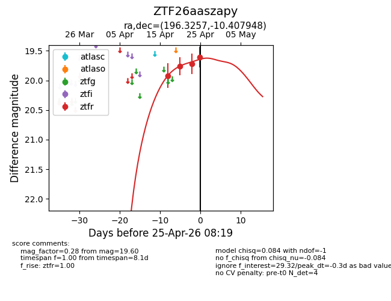
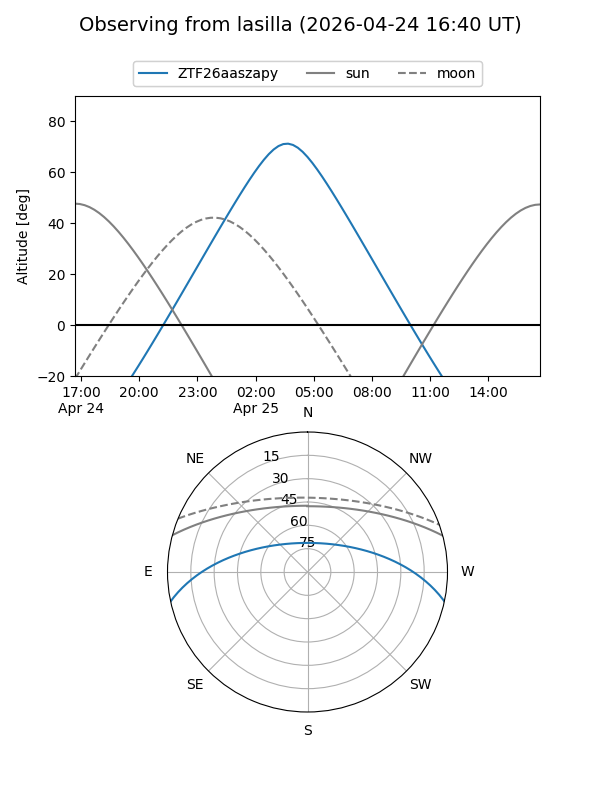
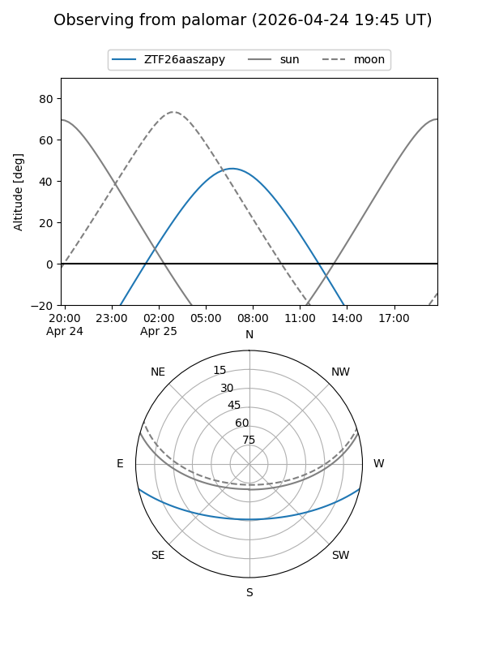

ZTF26aaszapy
Target ZTF26aaszapy at 2026-04-25 08:20
Aliases and brokers:
FINK: link
Lasair: link
ALeRCE: link
alt names
ZTF26aaszapy (ztf,fink_ztf)
Coordinates:
equatorial (ra, dec) = 196.3257,-10.40795
equatorial (HMS+DMS) = 13:05:18.16,-10:24:28.61
galactic (l, b) = (308.5139,+52.31347)
Flags:
Photometry:
last ztfr=19.60
4 ztfr detections
Lightcurve

Visibility


Additional plots